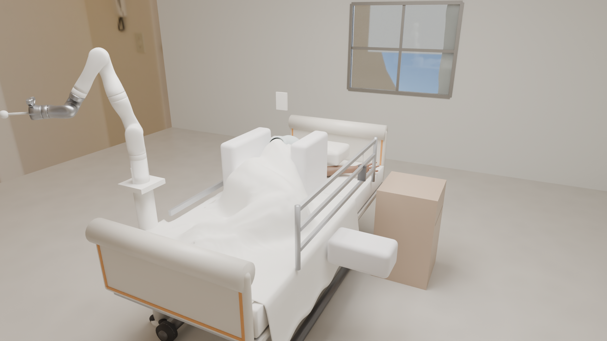

Work in progress · platform v2 · last revised 2026-10-02
A physics simulation platform being built for robot-assisted diaper changing and perineal cleaning on a statistical (SMPL-X) body. It is designed to measure three things separately: garment state, cleaning coverage and tissue injury. None of the three is complete.
Mu-Hua Wang · independent
WORK IN PROGRESS. This is an unfinished research platform, not a finished system and not a manuscript. All results are simulated, model-internal and not validated on humans.
Work in progress; all results are simulated, model-internal, from one SMPL-X body, unvalidated against people. A structured literature search (September 2026) found no published simulation platform in which a manipulator performs perineal cleaning or diaper changing on a statistical body while separately measuring garment state, true-skin cleaning and tissue injury. On a rigid bed, in an older supine posture and with unswept tissue parameters, the 90th-percentile and 1 cm³-peak compressive strain after 285 simulated minutes differ by less than 1 % between the two finest meshes run at that duration and between two time schedules (a pairwise tolerance, not a demonstrated convergence order); skin pressure falls while deep strain rises; the other tissue quantities listed below do not meet the same tolerance. No run yet gives a closed, layered, non-penetrating brief, held after release, within the platform’s own stretch bound, which has no physical origin.
The scene (5 s, no sound). A simulated patient on a simulated pressure-sensing mattress with a chosen stiffness law; the robot is parked. Rendered from a simulation state, not animated by hand. A rendering is not evidence that a posture is correct; arm and head resting positions are being refined (see Next steps).
Designed to record leg-opening and waistband gaps, tab tension, stretch and slip after release. Status: in development; see Garment.
Designed to record tool reachability, arm-chain feasibility (clearance and reach) and a wiped-area fraction per target region. Status: reachability is simulated geometrically (below); in the runs on file, per-region coverage is not yet established (see Open items).
Compressive strain in a soft-tissue model of the sacral region, and skin pressure, over 285 simulated minutes of supine loading (rigid bed, one body; below). No injury conclusion is drawn.
The patient is an SMPL-X body driven by MuJoCo, with generic bone meshes registered to the skin (hip-centre residual 10.4 mm on this body) and passive joint mechanics: hip and knee use the Riener & Edrich 1999 double-exponential form with coefficients transcribed from secondary sources and units inferred; the ankle is a modified form.
The resting positions used so far are start states for tissue loading, route planning and rendering. A state counts as at rest when it meets a preset drift criterion after the simulation has been continued; support equal to body weight holds by construction, so it is a consistency check, not evidence of a correct posture. Where a leg is raised it is held by ideal point welds and is not self-supported.

Side-lying with padded supports, rendered from a simulation state (blanket draped). A rendering, not evidence that the posture is correct.
The sacral soft-tissue model uses F-bar tetrahedral elements (a formulation that reduces volumetric locking) solved by a static Newton method. Its production energy passes a finite-difference derivative check (6–7×10−12), a patch test (≤ 7.6×10−14 in four of five F-bar cases; the fifth 6.7×10−10), and reproduces the target stiffness and Poisson’s ratio of homogeneous blocks to about 10−4. The solver’s own convergence flag reads false for the fat, muscle and 15 kPa foam block tests because its tolerance was set below round-off; the values still agree to 10−4.
On a rigid flat bed, for one body in an older supine posture and with tissue parameters not swept, the 90th-percentile compressive strain (29.7 %) and the peak compressive strain averaged over 1 cm³ (48.7 %) after 285 simulated minutes (applied load 125.92 N, the taxel spring channel; net body load 123.57 N) change by +0.55 % (P90) and +0.43 % (peak) between the two finest tissue meshes run at 285 minutes, and by +0.66 % / +0.56 % with a 37-step instead of a 19-step time schedule. This agreement holds only for these two quantities and only between the two finest meshes and between 19 and 37 steps (the next-coarser mesh pair differs by +2.6 % in P90; a still finer mesh exists only for shorter durations). This is a pairwise tolerance, not a demonstrated convergence order; for the foam mattress the mesh sequence was not settling (see below). It is not extended to other bodies. Strain here is engineering compressive strain, 1 − λmin of the F-bar tetrahedron. The absolute 285-minute values are not robust across postures (about ±3.1 % in P90 and ±2.4 % in the peak; first-order bounds from one pair of states, assumed linear).
Over the same interval skin pressure falls while deep strain rises, the two moving in opposite directions (a within-body statement over time for one body, not a population or mattress claim). Interface pressure alone is therefore not a surrogate for deep-tissue load. The window pressure, the 5 cm mean, the contact area and the volume above 40 % are not converged within 1 % even on the rigid bed and are not quoted.
Strain levels are compared with Gefen et al. 2008 (compressive strain tolerated below 65 % for 1 h and below 40 % for about 285 min), measured on in-vitro constructs and read at abstract level; the mapping from the model’s 3D minimum-stretch strain to the construct’s applied strain is a modelling choice. No safe or injured conclusion is drawn. A rigid-against-foam mattress comparison is not reported: foam stiffness values are assumed bracketing values pending published hospital-mattress data, and the 285-minute foam results are not mesh-converged.
Straight-approach access of a 10 mm sphere tool to the perineal target faces (patch_1_0 only; 52 of 63 faces; one face is 1.6 percentage points; best of 25 approach directions) rises from 19 % with the legs stacked to 83 % with the upper leg flexed 45°, abducted 30° and the knee at 90°; 78 % after the soft tissue is allowed to sag under gravity, just under the platform’s own 80 % bar. For the 20 mm tool the corresponding value is 33 %. With the upper leg abducted 45°, access is 92 % (hip flexion 45°) and 95 % (70°) before sag.
With the upper leg not raised, 10 mm-tool access to the main perineal patch (patch_1_0) stays at 21–25 % for hip flexion 45–90° (19 % at the rest state). Abduction rather than flexion opens the slot between the thighs (flexion 45°: 21 / 41 / 83 / 92 % at abduction 0 / 15 / 30 / 45°). The clinical qualitative literature (Sano 2024, Kaneyuku 2024) describes hip flexion as creating space; in this model, flexion alone does not open the slot. No source measures groove access by posture.
These are geometric accessibility results under the platform’s own rule, not task success; the raised leg is held by ideal point welds, not self-supported; and SMPL-X accuracy in the perineal region is unvalidated (supine whole-body SMPL against CT, chamfer error 15.8 ± 4.0 mm, n = 3; Zhang et al. 2026, arXiv:2607.02156).
Wiping is simulated as one-way, quasi-static finite-element contact between a compliant pad and the soft-tissue model’s skin surface, with a kinematic arm (older conditional start state; see scope). Pad size, stiffness and friction are assumed, and no soil model exists.
Garment tests so far are on synthetic flat and 150 mm-radius cylindrical patches or on the older conditional start state named under scope. The garment toolchain exists only for that start state; portability of any garment result to another pose is untested.
A structured literature search (September 2026) found no published simulation platform in which a manipulator performs perineal cleaning or diaper changing on a statistical (SMPL-X-type) human body while separately measuring garment state, true-skin cleaning and tissue injury. This is the result of one search run, about simulation platforms only. The nearest works found are He et al. 2026 (arXiv:2609.02402; forearm, upper arm and abdomen bathing only) and Wang et al. 2026 (arXiv:2604.08664; seated, no pelvis).
A citation audit (September 2026) checked platform numbers against sources: Gefen 2008 (40 % at 285 min, 65 % at 1 h) is supported at abstract level; the Riener–Edrich 1999 form is supported but its coefficients and units were not seen in the original (secondary sources); other thresholds the platform used earlier were flagged as not supported by their sources, and none of them is quoted on this page.
Target: arms and head at natural resting positions, with hands resting on the abdomen (a target, not a current result); a pillow as a scene fixture; re-rendering the visual set from updated simulation states; skin textures for the face.
Signed-clearance wing paths and sourced fastener stiffness; nonwoven and elastic parameters from published diaper data; fit criteria from industry leakage tests.
Replacing the bracketed foam stiffness with published hospital-mattress data and rerunning the 285-minute comparison with mesh and time controls.
A sourced coverage criterion tested on a state whose answer is known; softer pad and higher-friction variants.